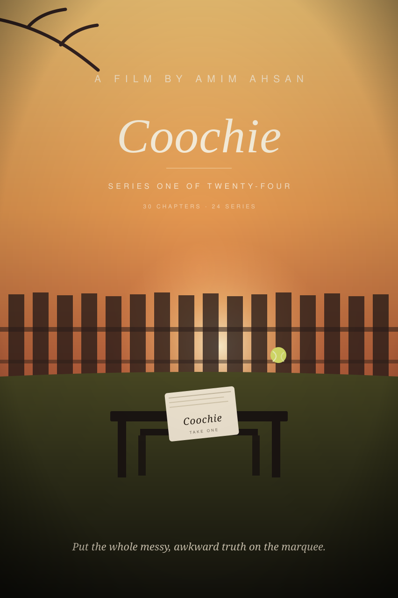

Maya
nineteen, the director
Writes everything down. Believes a title is an argument you win in a quiet room.

Series One of Twenty-Four
Put the whole messy, awkward truth on the marquee.
Two nineteen-year-olds, one borrowed camera, eleven unpaid crew, and a word that makes adults look at the tablecloth. One summer, thirty chapters, sixty hot dogs.
Series one · summer
Maya is nineteen and has decided that this summer she is not going to whisper around the edges. Leo is nineteen and has a job at a hardware store and a cousin who owns a camera he is afraid of. Between them they have sixty-one dollars, one garage, and a title nobody in the family will say at dinner.
The film they make is twelve minutes long. Getting to those twelve minutes takes thirty chapters: casting the cul-de-sac, sixty-three takes for a single line, a party scene shot in a garage with eleven people pretending to be forty, a noise complaint at one in the morning, and a screening in a church basement where twenty-seven people sit in forty chairs.
Shock is a marketing plan, not a script. The question is what's in the second act.
Series one is about the first one: the thing you make badly, in public, with people you love, before you have any idea whether you are any good. The remaining twenty-three series are already on the shelf.
Twelve who are in it
nineteen, the director
Writes everything down. Believes a title is an argument you win in a quiet room.
nineteen, the camera
Can catch a tennis ball eleven years running. Knows where the light is.
Maya's mother
Counts everything and calls it a habit, not a criticism. Pays for the hot dogs.
Maya's grandmother
Eighty-two. Painted over a word forty years ago; it came back through the paint.
seventeen, the crier
Can cry on cue. Asked for his real name in the credits.
the rival
Film camp, ring light, a lighthouse. Reviews honestly and expects the same.
the hardware man
Thirty years of screws and one good piece of advice per shift.
the teacher
Hands out a festival form and thirty dollars he will never see again.
eleven, the crew
Whistles through his teeth. Invites his whole class. Eats last.
the uncle
Asks what the film is called, and then wishes he hadn't.
the cousin
Owns the camera and is afraid of it. Three rules, one of them unspoken.
the complaint
Calls the police at one in the morning and gets the best line in the chapter.
Three parts · five chapters a page
Full screenplay · INT. / EXT.
Part One — The Word
Cicadas. The lawn is patchy, the maple is thick, and the light comes down through it in coins.
MAYA, nineteen, sits cross-legged on a faded quilt with a spiral notebook on her knee. Beside her, LEO, nineteen, throws a bruised tennis ball straight up and catches it with a dull thwack. He has not missed in eleven years.
MAYA
We're not calling it a movie.
LEO
What are we calling it?
MAYA
A film. A feature. Something with a poster and a runtime and a man in a tuxedo saying the name out loud.
Leo catches the ball. Considers.
LEO
You want a tuxedo.
MAYA
I want the tuxedo to be somebody else's problem. I want the name to be ours.
She writes something in the notebook. He does not look, which is a small act of love.
Close on Maya's hand. She stops sketching. Above it, in bold looping cursive: COOCHIE.
LEO
(without looking over)
You're still stuck on the title.
MAYA
It's not just a title, Leo. It's a statement. A reclamation. You say it out loud in a quiet room and suddenly everyone forgets how to breathe.
Leo catches the ball. Pauses. Turns his head.
LEO
Or they just think you're naming a stray cat.
MAYA
(smirking)
That's the beauty of it. Dual-purpose branding.
She snaps the notebook shut. The sound is sharp in the lazy air.
She stands, brushes grass off her jeans, and looks at the orange horizon.
MAYA
If we're making this film, we don't whisper around the edges. We put the whole messy, awkward truth right on the marquee.
Wide: two silhouettes against a burning amber sky, and the streetlights coming on one by one, humming.
The popsicle has melted into the table. Leo picks up the notebook and opens it, which he was not invited to do.
Pages: a horse. A bridge. A woman with a sword. A boy falling off a roof. A banner that says TWENTY-FOUR.
LEO
What's the two-four?
MAYA
Series. Twenty-four of them.
LEO
Twenty-four series of what?
MAYA
Of this. Of the thing we're doing. Thirty chapters each, minimum. Some of them will need more and we'll give them more, because a story that's cut to fit is a story that's lying about its size.
LEO
That's seven hundred and twenty chapters.
MAYA
Seven hundred and twenty minimum.
Leo closes the notebook very slowly, like a man closing a door on a room with a fire in it.
LEO
Okay. We start with one.
MAYA
We start with one.
Part One — The Word
A laptop. A bowl of grapes nobody is eating. Maya stands; Leo sits; RUTH, fifty-one, leans on the counter with her arms folded in a way that is not unfriendly but is not a chair.
MAYA
It's a word that was used against us and now it's ours. That's the whole pitch.
RUTH
Whose "us"?
MAYA
Girls. Us. The ones who got called it in a hallway and had to decide whether to laugh.
Ruth picks up a grape. Eats it. Takes her time.
RUTH
And you're going to make it a movie about that.
MAYA
I'm going to make it about two kids who make a movie about that, and get it wrong, and get it right, and have to show it to twenty-seven people in a church basement.
RUTH
Twenty-seven. That's specific.
MAYA
I'm optimistic.
Leo has his hands around a mug he isn't drinking from.
RUTH
Leo. Your job.
LEO
Hardware store. Four days a week. Six to two.
RUTH
And the camera?
LEO
I can borrow one. My cousin has one he's afraid of.
RUTH
Good. Afraid is better than broken. — Maya. Show me the budget.
Maya slides the notebook across. Ruth reads it. Her face does something complicated and then settles.
RUTH
There is no budget.
MAYA
There's a list of things we don't have to pay for.
RUTH
That's a budget with better manners.
MAYA
Also true.
Ruth puts the notebook down and pushes the grapes toward Leo, which is a yes.
The fridge hums. Leo is cutting cardboard on the floor, making a clapperboard. Maya writes the title on it in marker: COOCHIE.
LEO
If we say it seven hundred and twenty times, does it stop being a joke?
MAYA
That's the experiment.
She snaps the clapper. It makes a flat cardboard sound, and they both look at it like it owes them money.
Part One — The Word
A desk lamp, a paper cup of coffee long gone cold, and the notebook open at the first page of an outline.
Maya writes standing up, which she does when it's going well.
Close on the page: ACT ONE — WE DECIDE. ACT TWO — WE BUILD IT. ACT THREE — THEY WATCH IT.
MAYA
(to herself)
Act two is where the money goes and the weather turns and somebody breaks. Except we have no money, the weather is humid, and everybody's fine. So act two has to break somewhere else.
She crosses out BREAKS and writes, after a while, LEARNS WHAT IT COSTS.
The shelf of notebooks. She pulls one down at random. It falls open to a page from when she was fourteen: a drawing of a horse, and beneath it, in careful letters, the word SORRY.
MAYA
Okay. That's a different film.
She puts it back. Takes the new notebook. Sits down. Writes one line at the top of a blank page and underlines it twice.
The line: EVERYBODY IN THIS MOVIE IS AFRAID OF ONE WORD.
Leo at the window, outside, on the lawn, holding a flashlight up under his chin like a kid telling a ghost story. He mouths something.
Maya opens the window.
LEO
I got the camera.
MAYA
It's eleven o'clock.
LEO
It's eleven o'clock and I have a camera and we have a film with no budget. This is the best night of our lives and you're doing homework.
Maya looks at the notebook. Then at him. Then she closes it, and the lamp, and the window, and the sound of her feet on the stairs is the scene change.
Part One — The Word
Four people: Ruth, Maya, Maya's uncle DALE, and Maya's grandmother JO, eighty-two, who is not deaf and lets people think she is.
DALE
So. The film.
MAYA
The film.
DALE
What's it called?
A pause with a very specific temperature.
MAYA
Coochie.
Dale's fork stops. Jo's does not.
DALE
You're not serious.
MAYA
I'm extremely serious.
DALE
Ruth. Say something.
RUTH
I'm eating.
Jo puts down her fork, wipes her mouth, and takes her time.
JO
When I was nineteen, a boy called me something in a parking lot and I went home and wrote it on the inside of my closet door. Then I painted over it and wrote my own name on top.
DALE
Ma.
JO
I'm not finished. — The paint was cheap and the word came back through. It's still there. I know it's still there because I sold the house and the new people painted it again and I drove past and could still see the shape.
Nobody says anything. The window unit rattles.
JO
If she wants to put it on a marquee, let her put it on a marquee. It's a word with a lot of use in it.
Maya looks at her grandmother for a long moment, and Jo goes back to her food like she's said nothing at all.
Dishes. Ruth washes, Maya dries.
RUTH
She's not wrong, you know. About the use in it.
MAYA
I know.
RUTH
But a word with use in it can also be used. That's the risk. You'll find that out around the screening, I expect.
She hands over a wet plate. Maya takes it the way you take a warning you intend to ignore.
Part One — The Word
Leo at the counter, weighing nails for a woman who is not in a hurry. SAM, sixty, behind him, sorting a bin of washers into another bin.
SAM
You're doing that wrong.
LEO
It's a scale.
SAM
It's a scale and you're weighing them like they're diamonds. Put the scoop in, take a scoop, guess, then weigh. Nobody's building a bridge.
LEO
Somebody's always building a bridge.
SAM
Not with three-inch galvanized, they're not.
The customer gone. Sam leans on the counter. Leo is drawing something on the back of a receipt.
SAM
That the film?
LEO
That's a shot list.
SAM
Looks like a floor plan.
LEO
It's both. If I know where the camera goes I know where the crew goes and if I know where the crew goes nobody stands in the light.
Sam looks at him for a moment too long.
SAM
You know what you are?
LEO
Nineteen and paid badly.
SAM
You're the guy who knows where the light is. That's a whole career, if you want it.
Sam counts the register. Leo sweeps.
SAM
Take the wood.
LEO
What wood?
SAM
The pallet in the back. Broken one. You're building something, you're always building something, and I'm not going to sell you lumber you can't afford and I'm not going to give you the good stuff either, because then you'd expect it.
Leo looks at the pallet. Then at Sam, who is not looking at him.
LEO
Thanks.
SAM
Sign for it. It's still inventory.
Part One — The Word
ANDRE, twenty-four, opens the bag with the care of a man who has replaced this camera once already.
ANDRE
Rules. One: it does not leave the county. Two: it does not get rained on. Three: if you break it, you tell me before you tell anybody else, and we deal with it before your mother finds out.
LEO
Deal with what?
ANDRE
Exactly the question a man who's going to break it asks.
He sets it on the bench. Leo reaches for it and stops, which Andre notices and approves of.
ANDRE
Two batteries. Four cards. The lens is slow in low light, so if you're shooting at night, shoot at night with a lamp, don't be a hero.
LEO
How much is it worth?
ANDRE
Don't ask that. If you know, you'll hold it like it's worth that, and then the film looks like a man holding a camera.
Andre shows him the record button. Leo presses it. The red light comes on and the room gets very quiet.
ANDRE
Say something.
LEO
Testing.
ANDRE
Say something true.
Leo looks at the little screen. At himself, small and green-lit.
LEO
I've wanted to do this since I was eleven and I've never said it out loud.
Andre stops the recording.
ANDRE
Good. That's take one. Now you can make a film, because you've already got one true thing in the can and nobody can take it out.
Leo walks home with the bag on his shoulder, one hand on the strap. He is being extremely careful and it looks like a man carrying a baby.
At the corner, he stops, sets the bag down, and puts both hands on his knees, and breathes.
Then he picks it up again and keeps walking.
Part One — The Word
A folding table. A cardboard sign. Maya with the notebook, Leo with the camera.
A line of nine people, most of them under sixteen, one of them seventy.
MAYA
Name, age, and one thing you can do that nobody asked you to do.
KID
Terrance. Eleven. I can whistle through my teeth.
MAYA
Terrance, you're in the film.
LEO
(quietly)
We don't have a part for him.
MAYA
We do now. He's the boy who whistles through his teeth. That's a character and it's better than anything in my notebook.
The last person in line: JO, with a folding chair, sitting because standing is for people with time.
JO
I can make a pie and I can hold a grudge for forty years.
MAYA
Grandma.
JO
You need somebody old in this film. Otherwise it's a film about people who think they invented being nineteen.
Maya writes her down. Leo, behind the camera, is laughing silently, shoulders going.
Part One — The Word
PRIYA, nineteen, has a phone, a ring light, and the calm of a person who has already won something.
PRIYA
I heard you're making a movie called Coochie.
MAYA
I heard you're making one about a lighthouse.
PRIYA
A lighthouse is a metaphor. It's got structure. What's yours got?
MAYA
A word that makes adults look at the tablecloth.
Priya laughs, and it is not entirely unkind.
PRIYA
Shock is a marketing plan, not a script. When the laugh's over, what's in the second act?
MAYA
Come to the screening and find out.
PRIYA
I will. — Maya. If it's bad, I'll say so.
MAYA
I'd be insulted if you didn't.
Maya sits in the driver's seat of a parked car with the engine off and her hands on the wheel.
She takes out the notebook. Opens to act two. Looks at LEARNS WHAT IT COSTS for a long time.
Then she writes under it: SHE FINDS OUT WHO SHE'S WILLING TO BE BAD IN FRONT OF.
She closes it, starts the car, and pulls out without checking her mirror, and a horn sounds, and she laughs once, alone.
Part One — The Word
Leo has the camera on a borrowed tripod made of a ladder and a clamp. Maya stands on the sidewalk holding a paper cup.
LEO
Walk toward me. Don't look at the camera. Don't look at the cup. Look at the thing you're walking toward.
MAYA
What am I walking toward?
LEO
You're the one who wrote it. — Two. One.
She walks. It is very ordinary and it is exactly right, and neither of them says so.
Take two. Take seven. Take eleven, in which a garbage truck goes past and the whole shot shakes.
MAYA
Keep it.
LEO
The truck is in it.
MAYA
The truck is the town. Keep it.
Leo looks at her. Then at the little screen. Then he nods and writes TRUCK — GOOD in the notebook margin.
Part One — The Word
Maya and Leo sit on the edge of the deep end with their feet in the water. The pool is empty and blue and enormous.
LEO
Say the thing you've been not saying since the parking lot.
MAYA
What if it's just a dirty word in a nice font.
LEO
Okay.
MAYA
That's it? Okay?
LEO
You said it. It's out. Now we can either make the film or sit here until the lifeguard comes.
Maya looks at the water. Then she stands up and jumps in, badly, and comes up laughing with her hair over her face.
MAYA
It's cold. Get in.
They float on their backs, side by side, looking at the sky.
LEO
If it's bad, we'll make another one.
MAYA
If it's bad, we'll make twenty-three more.
LEO
You're going to say that all summer, aren't you.
MAYA
All twenty-four summers.
Part Two — The Summer
Take fourteen. Dialogue. And a lawnmower starts two houses down and does not stop.
MAYA
We can wait.
LEO
We've waited forty minutes. He's doing the whole yard. Then he'll do the next one.
MAYA
What if we record the dialogue after?
LEO
Then we'll be the film with bad sound and a lawnmower in it.
They look at each other. Then Maya walks across the lawn, says something to the boy, and comes back.
MAYA
He'll do the far side first. We have twelve minutes.
LEO
What did you tell him?
MAYA
The truth. That we're making a film and he's ruining it.
LEO
And he was fine with that?
MAYA
He asked to be in it.
Part Two — The Summer
Ruth takes off her shoes at the door, sits, and pulls the laptop toward her without asking.
RUTH
Sixty-one dollars and forty cents.
MAYA
That's the whole spend.
RUTH
For a feature film.
MAYA
For a feature film.
Ruth scrolls. Stops. Scrolls back.
RUTH
You've bought propane, a bedsheet, and one hundred and forty hot dogs.
MAYA
The hot dogs are for the crew.
RUTH
How many people are in your crew?
MAYA
Eleven. And they're all nineteen and none of them are getting paid and half of them are lying to their parents about where they are.
Ruth closes the laptop. The clock is seven minutes fast. Neither of them looks at it.
RUTH
When I was your age I did something stupid and it took me nine years to finish it.
MAYA
What was it?
RUTH
A degree. — I'm not saying don't. I'm saying finish. If you start this and don't finish it, the not-finishing will follow you around, and it'll be bigger than the film ever was.
Maya nods. Ruth gets up, takes a twenty out of her purse, and puts it under the laptop.
MAYA
Mom.
RUTH
For the hot dogs. Everybody eats at the screening. That's not a film rule, that's a life rule.
Part Two — The Summer
Blankets on the walls. A bedsheet. Two work lamps, one of them propped on a paint can with a book.
LEO
Say it back to me.
MAYA
Key light is the one with the book under it. Fill is the one that's going to fall over. Don't walk between them or you'll look like a thumb.
LEO
And?
MAYA
And if it falls over, keep rolling, because a falling lamp is the most honest thing in this garage.
Leo adjusts the book. The lamp holds. They both look at it like it might bolt.
The crew — nine of them — sitting on the floor eating hot dogs. Terrance whistles through his teeth. Jo is in a folding chair with a plate.
JO
The light's wrong.
LEO
It's a garage.
JO
It's a garage with a shadow behind the girl's ear that makes her look like she's lying. Move the book-lamp two feet left.
Leo moves it. The shadow goes. Everybody looks at Jo, who goes back to her hot dog.
MAYA
Grandma, do you want a job?
JO
I'll take the credit and none of the hours.
Part Two — The Summer
DESHAWN sits in the chair. The crew is arranged behind the camera like a wedding photo.
MAYA
You're not crying because you're sad. You're crying because you promised yourself you wouldn't and then you did.
DESHAWN
About what?
MAYA
About the word. Somebody said it to you in the hallway and you laughed, and you've been thinking about the laugh ever since.
Deshawn looks at the floor. Then at the camera. Then at the floor.
And then he cries, easily, like turning on a tap, and everybody in the garage stops breathing.
LEO
(whispering)
Cut. — Cut.
DESHAWN
(wiping his face)
Was that okay?
MAYA
That was the film. Everything before this was the trailer.
The crew has gone. Deshawn lingers by the door.
DESHAWN
The hallway thing. It happened. Sophomore year. I laughed because he was bigger than me and I didn't know what else to do with my face.
MAYA
Do you want me to take it out?
DESHAWN
No. Put my real name on it. If it's going to be in a film, it's going to have my name on it.
Maya writes DESHAWN, REAL NAME in the notebook. Underlines it once.
Part Two — The Summer
Take thirty-eight. Maya says a line. Leo shakes his head.
LEO
Again.
Take forty-four. The lamp falls over. Nobody moves. Take forty-four continues.
MAYA
What's wrong with it?
LEO
You're acting.
MAYA
I'm playing a character.
LEO
You're playing a character playing a character. Do the line like you're tired and it's late and you want to go home.
Take sixty-three. Maya looks straight down the lens and says the line flat, exhausted, and it lands like a dropped plate.
LEO
(quietly)
That's it. That's the one.
They sit on the floor with the fan. Maya has her knees up.
MAYA
Sixty-three times. For one line.
LEO
Sixty-three times for the whole film, if it works.
MAYA
And if it doesn't?
LEO
Then we had a very long night in a garage and I got to watch you get good at something.
She looks at him. He is looking at the fan. The fan is the only thing moving in the shot.
Part Two — The Summer
One hundred and four degrees. The crew is lying on the concrete in the shade of a car.
TERRANCE
I'm not dead. I want that in the film.
LEO
You're eleven. You can't be in a film about dying.
TERRANCE
I can if I'm very convincing.
Maya puts the hose over her head. Stands there. Nobody speaks for a while.
MAYA
We're not shooting the party scene today.
LEO
The party scene is the whole second act.
MAYA
The party scene is the whole second act and we have eleven people, one garage, and no extras. So we shoot it at night, in the garage, and we lie about the party.
Ice from the cooler, distributed into paper cups. The crew drinks it like medicine.
JO
In my day we shot in the heat and we didn't have a fan.
MAYA
Grandma, you've never shot anything.
JO
In my day we still didn't have a fan.
Part Two — The Summer
Coloured bulbs. A speaker. Eleven people arranged in layers to look like forty. The bedsheet now has a crowd painted on it, badly, and the joke is that they've hung it behind the real crowd.
LEO
Everybody talk. Not words. Noise. Like a room.
They talk. It sounds like a room and not a party, and Maya hears the difference.
MAYA
It sounds like eleven people in a garage.
LEO
It is eleven people in a garage.
MAYA
Then let's shoot the truth. The film's about the party you weren't at, and everybody's been to that party.
New setup. Maya alone in the middle of the noise, not dancing, holding a cup. The camera goes around her once and comes back to her face.
The noise drops out of the mix entirely. Silence, with everybody's mouths moving.
MAYA
(to camera, quietly)
Everybody here is having the best night of their life and I'm standing in the middle of it doing arithmetic.
Leo holds the shot. The crew keeps miming. Somebody's arm gets tired and they keep going anyway, and that is the take they use.
Part Two — The Summer
Two officers. One of them is holding a clipboard and looks bored in a way that is careful.
OFFICER
Somebody called in a noise complaint. Says there's a party.
LEO
There's a film.
OFFICER
There's a film at one in the morning in a garage.
MAYA
There's a film at one in the morning in a garage.
The officer looks at the sign on the garage door: COOCHIE — SCENE 24 — QUIET PLEASE.
OFFICER
What's a coochie?
MAYA
It's the name of the film.
OFFICER
What's the film about?
MAYA
About a girl who gets asked that question in a driveway at one in the morning.
The squad car pulls away. The street is very quiet. Everyone stands in the driveway not looking at each other.
TERRANCE
That was the best take of my life.
LEO
We weren't rolling.
TERRANCE
I know. I was acting.
Maya laughs, once, too loud for the hour, and then the rest of them do too, and the neighbour's porch light goes off.
Part Two — The Summer
The timeline: eleven minutes and forty seconds of colour bars and clips with names like TAKE63_USE and TRUCK_GOOD.
LEO
The first cut is four hours long.
MAYA
It's nineteen minutes.
LEO
I mean it feels like four hours. Everything's in it because I couldn't decide.
Maya takes the headphones. Watches. Her face does nothing, which is worst.
MAYA
Cut the first two minutes.
LEO
That's the setup.
MAYA
Cut it. Start with the crying and let them catch up. If they can't catch up, we've made a film for people who need the setup and that's a smaller audience.
Deshawn's face, full screen. One tear. The room is silent except the fan.
LEO
This is a real film, isn't it.
MAYA
Don't say that yet.
LEO
Why not?
MAYA
Because it's the kind of thing you say at the good part, and then the good part is over and you've spent the sentence.
They watch it again. And again. The fan turns. Outside, a dog barks at nothing for a full minute.
Part Two — The Summer
Twelve minutes and three seconds. The end credits are three cards held up to the camera, filmed in the garage.
LEO
Play it.
MAYA
We just played it.
LEO
Play it like you haven't seen it.
They play it. She watches it like a stranger. At the crying scene she stops chewing her pencil. At the party scene she leans forward.
MAYA
It's short.
LEO
It's twelve minutes.
MAYA
It's twelve minutes and it's about a word, and the word is only in it four times.
LEO
Five. I counted.
She writes FIVE TIMES? on an index card and sticks it to the wall.
The credits card. Handwritten. It lists eleven names, then JO — CREDIT, NO HOURS.
LEO
We need a screening. A real one.
MAYA
Where?
LEO
Church basement. My aunt runs the kitchen. She'll say yes if we say the word "community".
MAYA
We are going to say the word "community" so many times.
Part Three — The Screening
Leo runs the copier. The flyer comes out: a black-and-white photo of the garage, the title in big letters, the date, the church basement, FREE — HOT DOGS.
SAM
How many?
LEO
Two hundred.
SAM
How many chairs you got?
LEO
Forty.
SAM
Then print forty. Two hundred flyers is a flyer problem.
Leo changes the number. Sam takes one flyer, folds it, and puts it in his shirt pocket.
LEO
You're coming?
SAM
I'm coming. I've been in the hardware business thirty years. I've seen worse titles.
Maya staples a flyer to the corkboard. Steps back. Reads it.
A woman walks past, stops, reads it, looks at Maya, and walks on.
Maya staples the next one a little higher, as if that will help.
Part Three — The Screening
The crew sets up. The projector is on four hymnals and a dictionary. The sheet is pinned to the wall with masking tape.
LEO
Higher on the left.
TERRANCE
It's a sheet.
LEO
It's a screen with a sheet's problems.
Jo arranges chairs in rows, which nobody asked her to do, and which is the most useful thing anyone does all night.
JO
Front row's too close. People don't want to be seen crying in the front row.
MAYA
Nobody's going to cry, Grandma.
JO
Somebody always cries in a church basement. That's what it's for.
Ruth arrives with a tray of something, in her good coat. She looks at the room, at the forty chairs, at her daughter.
RUTH
It's a real room.
MAYA
It's a basement.
RUTH
It's a room with chairs in it and people coming. That's the whole definition.
She puts the tray down and straightens a chair, and the two of them stand there not saying the thing.
Part Three — The Screening
Maya stands at the front. Twenty-seven people. Priya is in the third row with a notebook, which is worse than any review.
MAYA
This is twelve minutes long. It's called Coochie. It's about a word. Please laugh at the parts that are funny and don't laugh at the parts that aren't.
She sits down in the front row next to Ruth. Leo starts the projector. The countdown leader is cardboard with a number on it.
And then the film. The truck. The crying. The party. The silence with everybody's mouths moving.
The room is quiet in the way a room is quiet when it's working.
The credits card: eleven names. Somebody claps. Then everybody does, badly, at different times.
SAM
(standing up, to the room)
I sold them the lumber for the screen.
Laughter. Maya puts her face in her hands for exactly one second. Ruth puts a hand on her back.
RUTH
(quietly)
Twenty-seven.
MAYA
You counted.
RUTH
I always count. It's not a criticism. It's a habit.
Part Three — The Screening
Q&A. A man in the back row, fifty, stands with his arms folded.
MAN
I've got a question. Why that word?
MAYA
Because it was used on us and we wanted it back.
MAN
Used on you.
MAYA
Yes.
The man laughs. Not a cruel laugh — an uncomfortable one, the kind that arrives before a thought does.
The room hears it. Maya hears it. Leo's hand goes still on the laptop.
MAYA
That. That's the laugh. That's the whole reason the film exists.
The man stops laughing. Sits down. The room is silent in a different way than before.
People leaving. The hot dogs are gone. Priya comes up with her notebook closed.
PRIYA
The crying scene is real. The party scene is better than the crying scene, which is a problem, because you think the crying scene is the film.
MAYA
That's the most useful thing anyone's said to me all summer.
PRIYA
Don't get used to it.
She goes. Maya stands alone in the middle of the room with a tray of empty bun wrappers.
Part Three — The Screening
MR. HALLORAN, sixty, marks papers with a green pen. Maya sits on a desk, not in it.
HALLORAN
I heard about your screening. Twenty-seven people in a church basement.
MAYA
It was free. The hot dogs helped.
HALLORAN
Twenty-seven people is not nothing. Most films I see in this room have an audience of one and she's grading them.
He reaches into a drawer and takes out a folded pamphlet, worn soft at the corners: a regional student film festival.
HALLORAN
Deadline's the fifteenth. Entry fee's thirty dollars. I'll pay it and you'll pay me back when you're rich.
MAYA
What if we get rejected?
HALLORAN
Then you'll have been rejected by a festival, which is a completely different thing from being rejected by a person.
Maya reads the form. Terms and conditions. Categories. A line that says ALL ENTRIES MUST BE UNDER FIFTEEN MINUTES.
MAYA
It says under fifteen. We're twelve. We're actually eligible.
HALLORAN
That's why I gave it to you. If you were nineteen minutes I'd have thrown it out and spared you.
She folds the form and puts it in the notebook, which is the first time she has treated a sheet of paper like a responsibility.
Part Three — The Screening
Leo types with two fingers. Maya dictates. The form asks for a LOGLINE in 25 WORDS OR FEWER.
MAYA
Two teenagers make a film about the word that was used on them, and find out what it costs to say it out loud.
LEO
That's twenty-four words.
MAYA
We have one word left. Use it on the title.
He types the title. They look at it on the screen, in a form field, in a font that belongs to a bank.
LEO
It looks smaller here.
MAYA
Everything looks smaller in a form. That's what forms are for.
The cursor hovers over SUBMIT. Maya's hand is on the mouse. Leo is watching.
LEO
You want to do it or should I?
MAYA
You printed the flyers. I'll do the submitting.
She clicks.
The screen says THANK YOU. YOUR ENTRY HAS BEEN RECEIVED.
They sit there for a moment, and then Maya gets up and does a small, terrible dance around the kitchen, and Leo watches her do it with the expression of a man who has decided to be in all twenty-four series.
Part Three — The Screening
An email. Subject: YOUR SUBMISSION. The body is four sentences long and three of them are kind.
Close on the words: WE RECEIVED AN UNPRECEDENTED NUMBER OF ENTRIES THIS YEAR.
MAYA
(reading aloud, flat)
"Unfortunately, we are unable to include your film in this year's programme. We wish you the best with future work."
She closes the laptop. Sits in the dark. Then opens it again, and reads it a second time, as if the words might have changed overnight.
Ruth at the counter with coffee. Maya comes in with the laptop and puts it down, open, facing her mother.
RUTH
(reading)
"Unprecedented number of entries." Do you know how many festivals say that?
MAYA
All of them.
RUTH
All of them. — Are you finished?
MAYA
I don't know.
RUTH
Good. That's an honest answer, and it's not a no.
Part Three — The Screening
Fifty chairs. Sixty people, some standing at the back. Leo's aunt is doing a brisk trade in coffee.
TERRANCE
(to Maya, at the door)
I invited my whole class. And my teacher. And my teacher's class.
MAYA
Terrance, we have sixty hot dogs.
TERRANCE
Then I'll eat last. I'm eleven. I'm used to it.
Maya looks at the room: her mother, Jo in the front row with her arms folded, Sam in the back with his cap on, Priya with her notebook and her arms crossed, Mr. Halloran in the corner pretending to be off duty.
The film plays. The laugh scene gets a laugh that is the right shape this time. The party scene gets silence. The crying scene gets a room that has forgotten it is a room.
Then the credits. Then sixty people clapping at different times, badly, together.
MAYA
(at the front, holding the dead microphone)
The festival said no. So we're doing it here, where the chairs are free and the hot dogs are cheap. Thank you for coming twice.
SOMEONE AT THE BACK
When's the next one?
Maya looks at Leo. Leo looks at Maya. Neither of them has an answer and both of them know it is a yes.
Part Three — The Screening
They walk home from the screening carrying the empty hot dog trays.
LEO
Say it.
MAYA
Say what?
LEO
The word. The way you'd say it at the dinner table now.
Maya stops. Considers. Then says it clearly, without flinching, and it sounds like a title.
MAYA
Coochie.
LEO
Yeah. It's just a word now.
MAYA
It was always just a word. It was the room that gave it teeth.
They walk on. The porch light goes off as they pass it, and neither of them notices.
They put the trays down by the bin. Stand there.
LEO
So. Twenty-three more.
MAYA
Twenty-three more.
LEO
I should get paid for this one.
MAYA
You got a hot dog.
LEO
I got sixty hot dogs. It's the most I've ever been worth.
She laughs. He goes inside. She stands in the driveway a moment, looking at the garage.
Part Three — The Screening
Same table. Same quilt. A new notebook, thicker, with SERIES 2 on it in marker.
LEO
What's the second one about?
MAYA
A boy who works in a hardware store and knows where the light is.
Leo stops throwing the ball. It lands on the lawn and he doesn't get it.
LEO
That's me.
MAYA
That's you.
LEO
I don't know if I want to be a film.
MAYA
Nobody knows. That's the first chapter.
She opens the new notebook to the first page and writes a single line, then turns it so he can read it.
The line: EVERYBODY IS AFRAID OF BEING A WORD SOMEBODY ELSE CHOSE.
LEO
Thirty chapters?
MAYA
Thirty minimum.
Leo picks up the ball. Throws it. Catches it.
LEO
Okay. Roll camera.
Wide: two silhouettes against a burning amber sky, and the streetlights coming on one by one, humming.
The cardboard clapperboard snaps shut.
BLACK.